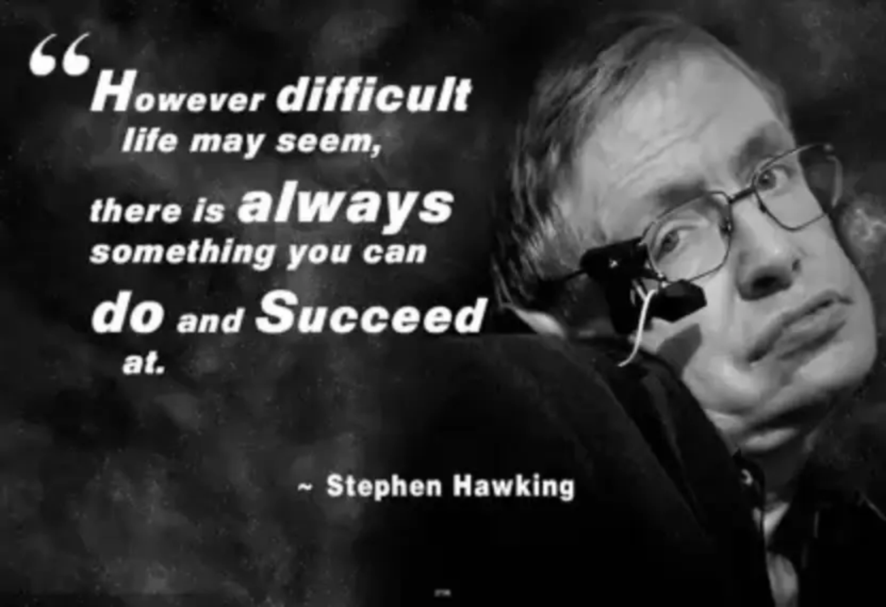

1942 - 2018
Stephen Hawkins
Hawking is best known for his groundbreaking work in the field of theoretical physics,
especially in the areas of black holes and the origins of the universe.
He was the author of several books, including "A Brief History of Time,"
which became a bestseller and helped to popularize science for a general audience.
Stephen Hawking was an English theoretical physicist, cosmologist, and author who was one of the most renowned scientists of his time.
He was born on January 8, 1942, in Oxford, England, and passed away on March 14, 2018, at the age of 76.
Hawking was diagnosed with a form of motor neurone disease in 1963 and was given just two years to live.
Despite this prognosis, he went on to live for more than 50 years, becoming one of the world's most famous scientists
and a symbol of the triumph of the human spirit over adversity.
Some of his achievements include:
1. Developing the theory of cosmological inflation:
Hawking was the first to propose that the universe underwent a rapid expansion in the first fraction of a second after the Big Bang.
2. Discovering the second law of black hole dynamics:
Hawking showed that black holes emit radiation, now known as Hawking radiation, which eventually causes them to evaporate.
3. Contributed to the understanding of black hole singularities:
Hawking helped prove the existence of singularities, which are points in space-time where the laws of physics break down, at the centers of black holes.
4. Writing popular science books:
Hawking was a prolific writer, authoring several books on science and cosmology, including the best-selling "A Brief History of Time".
5. Receiving numerous awards and honors:
Throughout his career, Hawking received many awards and honors, including being awarded the Presidential Medal of Freedom in 2009 and being made a Companion of Honour in 1989.